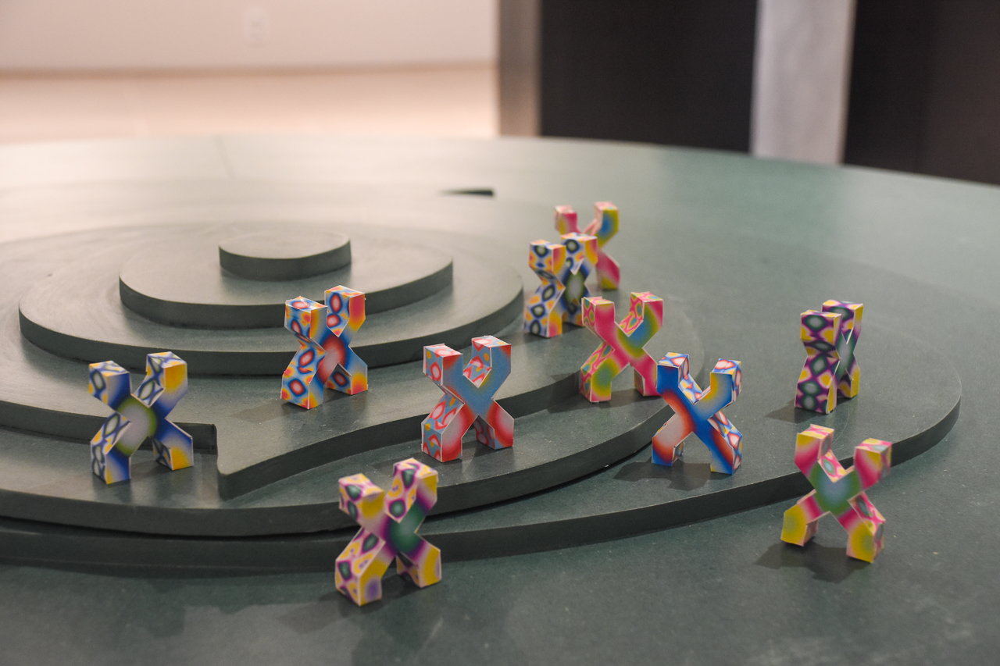
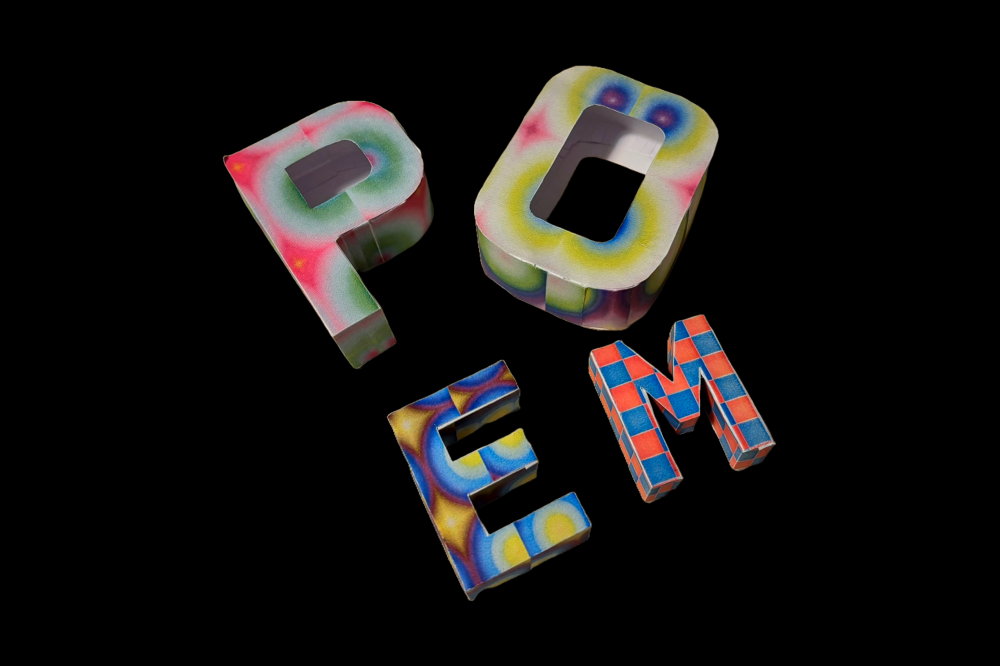
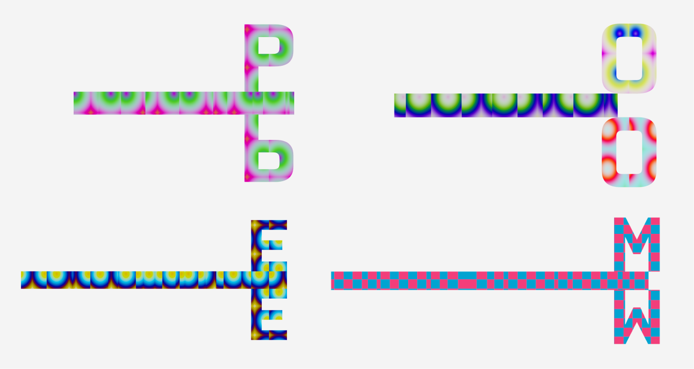
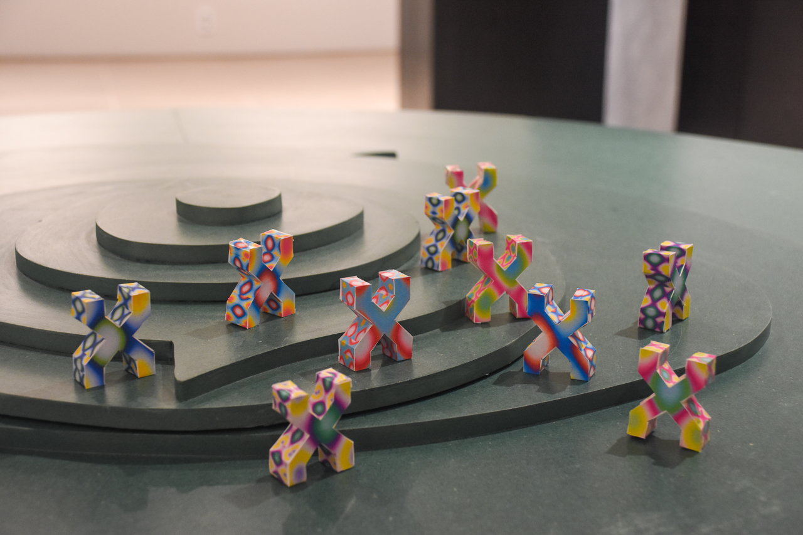
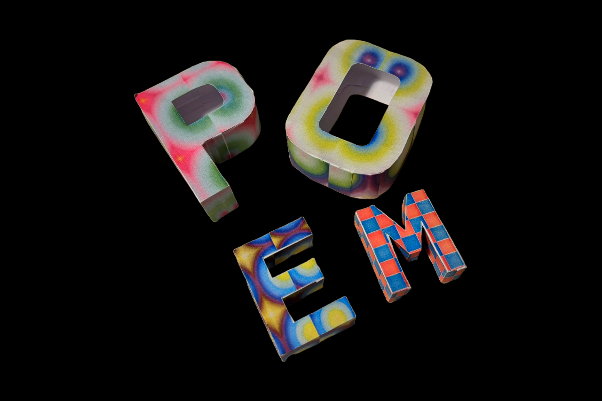
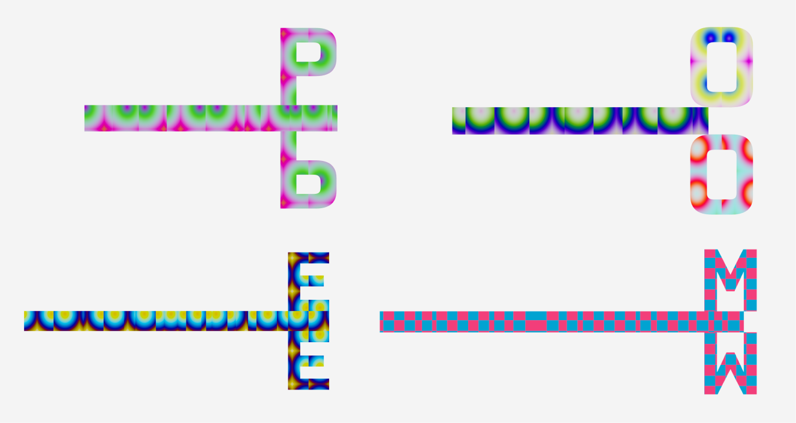

Yewon Jang°
Tool Maker
TypoFold
2024
A design tool that converts 3D typography into paper craft.
TypoFold is a design tool that transforms script-based 2D graphics into physical 3D typography through paper craft. The system generates real-time textures using p5.js and GLSL, which are then mapped onto 3D typographic forms. These forms can be converted into printable paper-craft patterns, allowing digital creations to exist in physical space.
TypoFold reimagines computational design by combining code-driven graphics with physical paper craft. Through custom GLSL shaders and unfolding tools, it bridges digital creativity and tangible typography.
TypoFold is a design tool that transforms script-based 2D graphics into physical 3D typography through paper craft. The system generates real-time textures using p5.js and GLSL, which are then mapped onto 3D typographic forms. These forms can be converted into printable paper-craft patterns, allowing digital creations to exist in physical space.
Key Features:
・ 3D typography with automated UV mapping
・ Conversion of 3D models into printable paper patterns
・ Built-in GLSL shader editor with real-time compilation
・ Customizable pattern size with scaling controls
・ 3D typography with automated UV mapping
・ Conversion of 3D models into printable paper patterns
・ Built-in GLSL shader editor with real-time compilation
・ Customizable pattern size with scaling controls
TypoFold reimagines computational design by combining code-driven graphics with physical paper craft. Through custom GLSL shaders and unfolding tools, it bridges digital creativity and tangible typography.
1. Face Processing System
When importing a model from a 3D tool into three.js and separating the faces, I observed that all faces were divided into triangles. To apply the concept of faces as humans perceive them, I implemented two methods.
① Proximity and Similarity
① Proximity and Similarity
D(f₁, f₂) = arccos(n₁ · n₂) < θ
f₁, f₂ represent two faces to compare, D(f₁, f₂) is the angle
between the two faces, and n₁, n₂ are the unit normal
vectors of the two faces. This equation calculates the angle
between two faces. It indicates how much two faces are
oriented in the same direction, and after experimenting
with 26 alphabets, I classified faces with θ value of 0.5 as
belonging to the same group.
② Continuity
C(f₁, f₂) = {
1 if |V₁ ∩ V₂| ≥ 2
0 otherwise}
V₁, V₂ represent the
vertex sets of each face, and |V₁ ∩ V₂| represents the
number of shared vertices. To determine if two faces are
physically connected, I counted the number of shared
vertices and recognized them as faces of the same group
when this value was 2 or more.1 if |V₁ ∩ V₂| ≥ 2
0 otherwise}
③ Grouping the surfaces
 Finally, a face group G is defined as a set of faces that are
adjacent (continuity) and have normal vector angles less
than the threshold (proximity, similarity). I designed the
system to sequentially group faces meeting these
conditions through a BFS algorithm, continuing until all
faces of the entire model are appropriately assigned to
groups.
Finally, a face group G is defined as a set of faces that are
adjacent (continuity) and have normal vector angles less
than the threshold (proximity, similarity). I designed the
system to sequentially group faces meeting these
conditions through a BFS algorithm, continuing until all
faces of the entire model are appropriately assigned to
groups.
Figure 1. Comparison before and after applying face processing system to 3D object:
(Left) Automatically triangulated state in three.js, (Right) State after applying face processing system based on Gestalt principles
2. Paper Craft Generation System

Figure 2. Paper Craft Template Diagram: (Top) Top-
Bottom Priority Unfolding Method, (Bottom) Side Priority
Unfolding Method
I considered two unfolding methods: 'top-bottom priority
unfolding' and 'side priority unfolding'. While 'top-bottom
priority unfolding' unfolds patterns centered on the top and
bottom faces, user testing revealed difficulties in securing
sufficient margins when cutting and assembling patterns.
Therefore, I ultimately adopted the 'side priority unfolding'
method, which allows users to cut and fold patterns more
intuitively.
| Unfolding Method | Top-Bottom Priority | Side Priority | Undecided |
|---|---|---|---|
| Preference (%) | 37% | 59.3% | 3.7% |
Table 1. User Preference Survey by Unfolding Method
I use BFS (Breadth-First Search) to identify consecutive
sides and DFS (Depth-First Search) to determine the
overall unfolding sequence, connecting them into a single long strip format. Using this generated side strip as a
reference, I calculate optimal placement positions for top
and bottom faces, determine folding sequences
considering face connections, and finally optimize the
overall layout by adjusting face placement to minimize
pattern size and marking appropriate margins and fold
lines for easy assembly.
3. Texture Mapping System

Figure 3. Website interface screenshot – 3D mode

Figure 4. Website interface screenshot – Unfold mode
I implemented the ability to apply graphics generated with
GLSL shaders and p5.js to 3D models. I adopted a
direction-conscious UV mapping strategy, using a method
that calculates tangent and bitangent vectors based on each
face's normal vector to construct a consistent texture
coordinate system. This ensures textures map naturally
regardless of face orientation.
To maintain texture continuity in the unfolded state, I applied different UV mappings according to face direction. For top and bottom faces, I calculated UV coordinates based on the xz plane, while for side faces, I used either the xy or yz plane depending on the face's main direction.
To ensure texture continuity in the unfolded state, I implemented a global scale-based mapping system where UV coordinates naturally connect between adjacent faces. This normalizes UV coordinates based on the overall model size, ensuring consistent texture connection between faces.
To maintain texture continuity in the unfolded state, I applied different UV mappings according to face direction. For top and bottom faces, I calculated UV coordinates based on the xz plane, while for side faces, I used either the xy or yz plane depending on the face's main direction.
To ensure texture continuity in the unfolded state, I implemented a global scale-based mapping system where UV coordinates naturally connect between adjacent faces. This normalizes UV coordinates based on the overall model size, ensuring consistent texture connection between faces.
🍭 Alphabet Keyring Workshop 🍭
TypoFold had a demo exhibition at HCI Korea 2025. People made their own pattern using TypoFold editor by editing codes or controling pattern size. Then, print the template by printer that I prepared.
They cut the paper into shapes along the lines specified in the template. These photos are of the keyrings they made.


Website
typefold.vercel.app ↖︎
Role
Personal Project
Skills
Javascript/three.js/GLSL/react
 




